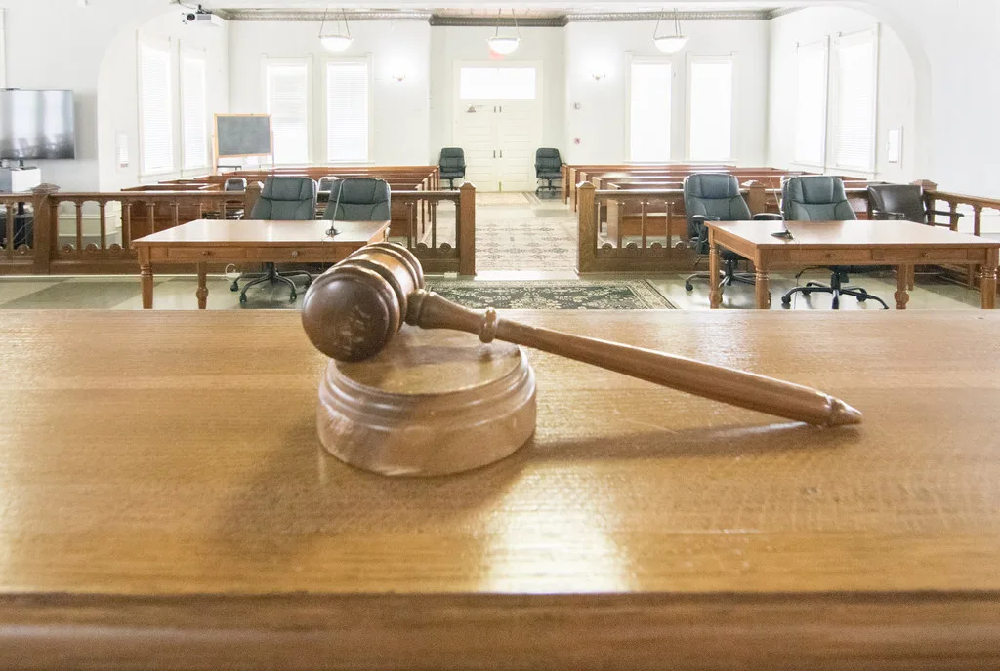

오세훈 시장 '여론조사비 대납' 2심 선고…시장직 운명 걸린 하루
오세훈 서울시장의 정치자금법 위반 혐의 항소심 선고공판이 23일 오후 2시 서울고법 형사7부(재판장 구회근 부장판사)에서 열렸다. 재판부는 이번 선고를 생중계하기로 결정해 전국적인 관심이 집중됐다. 1심에서 당선무효형에 해당하는 벌금 1000만원을 선고받은 오 시장에게는 이번 2심 결과에 따라 서울시장직의 존속 여부가 갈리는 만큼, 법조계와 정치권 모두 재판 결과를 주시했다.
사건은 2021년 4월 7일 치러진 서울시장 보궐선거를 앞두고 벌어진 일이다. 검찰과 특검은 오 시장이 정치 브로커 명태균씨로부터 비공개 여론조사 결과를 10차례에 걸쳐 제공받고, 당시 후원자로 알려진 사업가 김한정씨가 전직 부시장 강철원씨를 거쳐 그 비용 약 3300만원을 대신 지급하도록 했다고 보고 있다. 여론조사 결과를 사전에 받아보면서도 그 대가를 제3자가 치르게 한 행위가 정치자금법 위반에 해당한다는 것이 기소의 핵심 논리다.

지난 7월 22일 선고된 1심에서 재판부는 오 시장이 명씨에게 여론조사 5건을 의뢰하고 김씨가 그 비용 2100만원을 대납한 사실을 유죄로 인정해 벌금 1000만원과 추징금 2100만원을 선고했다. 공직선거법상 정치자금법 위반으로 벌금 100만원 이상이 대법원에서 최종 확정되면 당선이 무효가 되고 시장직을 잃게 되는 만큼, 1심 결과 자체가 이미 '당선무효형'으로 받아들여졌다. 오 시장 측은 선고 직후 "직접 증거가 없는 부당한 판결"이라며 즉각 항소했다.
지난 2일 열린 항소심 결심공판에서 특별검사팀은 오 시장에게 1심보다 무거운 징역 1년 6개월과 추징금 3300만원을 구형했다. 같은 자리에서 오 시장은 최후진술을 통해 "명태균씨를 단호하게 끊어내지 못한 점을 후회한다"며 눈물을 보인 것으로 전해졌다. 다만 혐의 자체에 대해서는 직접 증거가 없다는 입장을 재차 강조하며 무죄를 주장했다.

항소심의 결론을 가를 핵심 변수로는 명태균씨 진술의 신빙성과 통화 녹음파일의 맥락 해석이 꼽혔다. 공개된 녹음파일에는 명씨가 "오세훈이는 몰라예"라고 말하고, 비용을 댄 김한정씨가 "원한 것도 아니고 내 혼자 해 가지고", "나는 시장한테 직접 얘기를 들은 것도 없고"라고 언급한 대목이 담겨 있어 변호인 측과 특검 측이 서로 다른 해석을 내놓아 왔다. 이 발언들이 오 시장의 직접 지시나 공모를 뒷받침하는지, 아니면 오히려 관련성을 부인하는 증거인지를 둘러싼 법리 다툼이 선고 전날까지 이어졌다.
서울시정 안팎에서는 이번 선고 결과가 한강버스 등 오 시장의 역점 사업 추진 동력에도 영향을 줄 수 있다는 관측이 나온다. 2심 선고가 끝이 아니라 대법원 상고 절차로 이어질 가능성이 열려 있는 만큼, 최종 확정까지는 추가적인 시간이 필요할 전망이다. 정치권에서도 여야를 가리지 않고 이번 사건의 추이를 지켜보고 있어, 서울시장직을 둘러싼 법적 불확실성이 당분간 서울시정 전반에 그림자를 드리울 것으로 보인다.
이번 사건은 2022년 지방선거 이후 불거진 명태균씨 관련 의혹들 가운데서도 현직 광역단체장의 신분에 직접 영향을 미치는 대표적 사례로 꼽힌다. 명씨를 둘러싼 여론조사 대납·공천개입 의혹이 여러 정치인에 대한 수사로 번져온 가운데, 서울시장이라는 상징성 있는 자리의 거취가 걸린 이번 선고는 향후 관련 수사와 재판에도 영향을 줄 수 있다는 평가가 나온다.